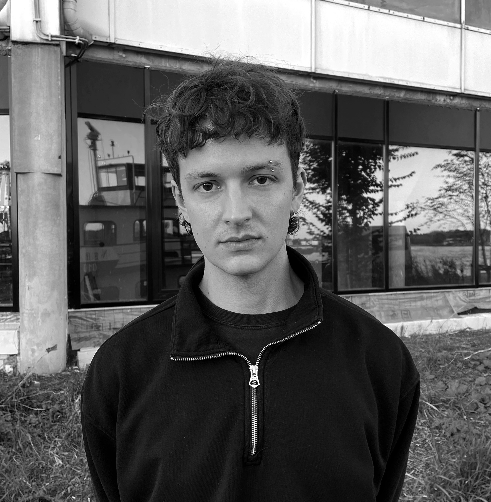

I am a visual and interactive designer based in Rotterdam, specializing in the use of creative technologies to craft immersive and engaging experiences. With a strong foundation in both concept development and hands-on technical execution, I bring ideas to life through fast prototyping and production. By continuously exploring emerging technologies, I create impactful experiences that resonate with audiences from start to finish.
contact@maxrentmeester.nlCurriculum Vitae
GitHub
